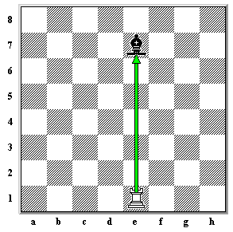

A Torre se move horizontalmente e verticalmente qualquer número de casas, para frente ou para trás. Na imagem abaixo, a Torre pode se mover para qualquer uma das casas destacadas.

Nesta imagem, a Torre agora tem menos escolha de casas para as quais pode se mover porque as outras peças brancas bloqueiam seu caminho. Agora ela só pode se mover para os quadrados destacados.

Se uma peça inimiga estiver em uma casa para a qual a Torre pode se mover, ela pode ser capturada. Na imagem abaixo, as brancas são capazes de capturar o Bispo com sua Torre. Isto é feito removendo o Bispo do tabuleiro e colocando a Torre naquela casa.
